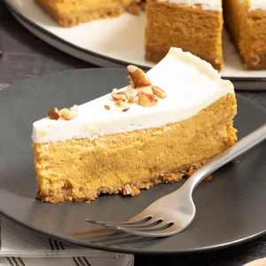

Hello!!
My name is Ketura Cordon

Pumpkin Cheesecake Ingredients:
Directions
Preheat your oven to 350°F. In a small bowl, stir together the graham cracker crumbs and sugar. Pour in the butter, and stir together. Press the mixture into the bottom of a 9-inch springform pan. Pop the crust in the fridge to chill while you make the filling.
In a large bowl, beat together the cream cheese and sugar until smooth and lump-free. Add the eggs all at once, and beat on low speed just until blended. Stir in the pumpkin, spices and salt until just combined.
Remove the crust from the fridge, and place it on a baking sheet. Pour the filling into the crust, and bake the cheesecake for 50 minutes.
Meanwhile, prepare the topping by whisking together the sour cream, sugar and vanilla until smooth.
Once the initial 50 minutes are up, take the cheesecake out of the oven, and spread the topping over the filling. Return the cheesecake to the oven, and bake for an additional five minutes.
Remove the cheesecake from the oven, and place it on a cooling rack. Let cool for 10 minutes. Carefully run a knife around the edge of pan to loosen the crust and cheesecake from the sides. Cool for one hour longer.
Refrigerate the cheesecake overnight. Carefully remove the ring from the pan. Top cheesecake with the chopped pecans, and enjoy.
see more photos here